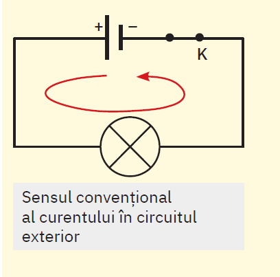
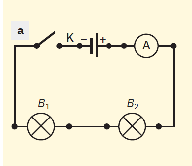
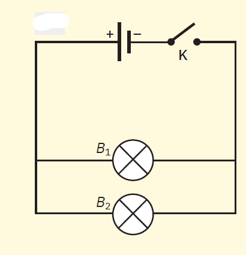
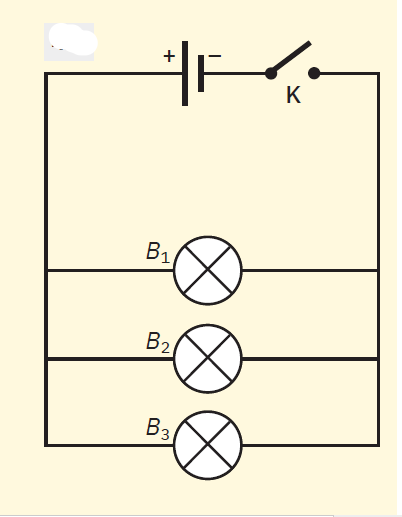
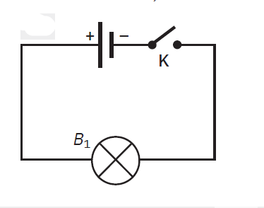
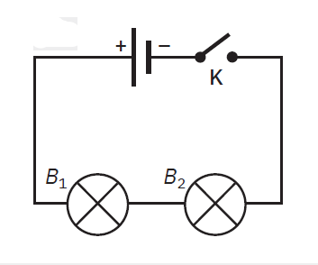
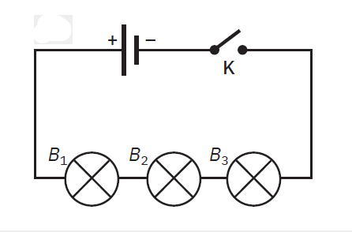
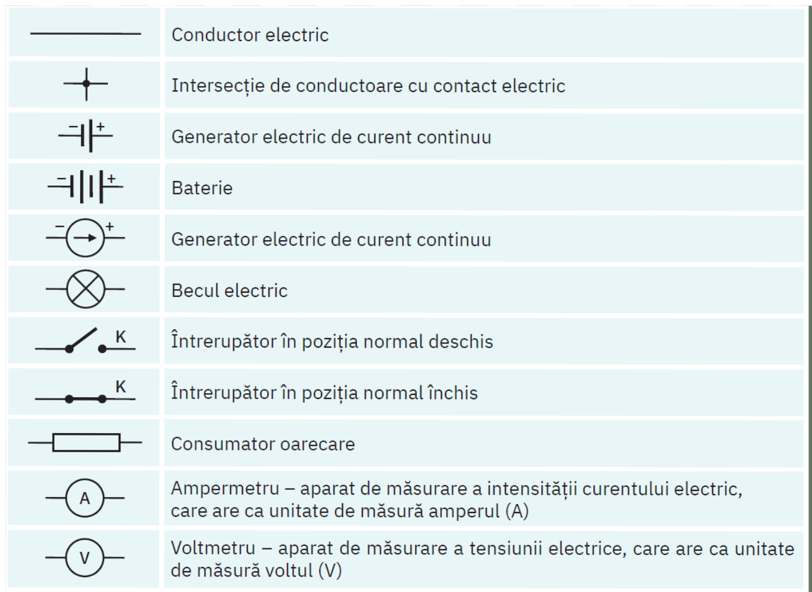

Lecția 8 – Circuitul electric simplu
„Fizica nu este o materie dominată de formule, ci de logică”
În această lecție observi cum se realizează un circuit electric simplu, afli care sunt elementele lui și înveți să recunoști simbolurile folosite în schemele electrice.
1. Ce este un circuit electric simplu?
Un circuit electric simplu este o legătură realizată între elemente electrice astfel încât curentul electric să poată circula prin ele.
Elemente de bază
- generator – de exemplu, bateria;
- consumator – de exemplu, becul;
- conductoare – firele de legătură;
- întrerupător – deschide sau închide circuitul.
Becul luminează doar atunci când elementele sunt legate corect și circuitul este închis. Dacă lipsește un element sau conexiunea este întreruptă, becul nu luminează.
2. Observăm un circuit simplu
Privește imaginea de mai jos. Identifică bateria, becul, întrerupătorul și firele de legătură.

Întrebări de observare
- Care element oferă energie circuitului?
- Care element se aprinde și transformă energia electrică?
- Ce rol au firele de legătură?
- Ce se întâmplă dacă întrerupătorul este deschis?
3. Comparăm mai multe montaje
În imaginile următoare poți compara mai multe variante de circuit. Observă atent ce se schimbă de la un montaj la altul.



4. Elementele circuitului electric
Un circuit electric simplu este alcătuit din elemente cu roluri diferite.
Generatorul
Generatorul este elementul care asigură existența curentului electric în circuit. În această lecție, generatorul este reprezentat de baterie.
Consumatorul
Consumatorul este elementul care funcționează datorită curentului electric. Aici consumatorul este becul.
Conductoarele
Firele conduc curentul electric și leagă între ele elementele circuitului.
Întrerupătorul
Întrerupătorul are rolul de a închide sau deschide circuitul.

5. Circuit deschis și circuit închis
Un bec luminează numai când drumul curentului electric este complet. Spunem atunci că circuitul este închis.


- Curentul pornește de la generator și parcurge întregul traseu.
- Trece prin bec, iar acesta poate lumina.
- Revine la generator prin conductorul de întoarcere.
- Dacă traseul este întrerupt, curentul nu mai circulă.
6. Simboluri folosite în schemele electrice
Pentru a desena mai ușor un circuit, folosim simboluri. Ele ne ajută să reprezentăm repede și clar elementele unui montaj.

7. Reține
- Un circuit electric simplu are nevoie de generator, consumator, conductoare și, de multe ori, întrerupător.
- Becul luminează atunci când circuitul este închis.
- Bateria este sursa care face posibilă existența curentului electric.
- Întrerupătorul controlează dacă circuitul funcționează sau nu.
- În schemele electrice folosim simboluri, nu desene detaliate ale obiectelor.
Verificare rapidă
Becul luminează atunci când circuitul este:
Navigare
Butonul „Mergi mai departe” rămâne vizibil pe fiecare pagină a lecției.